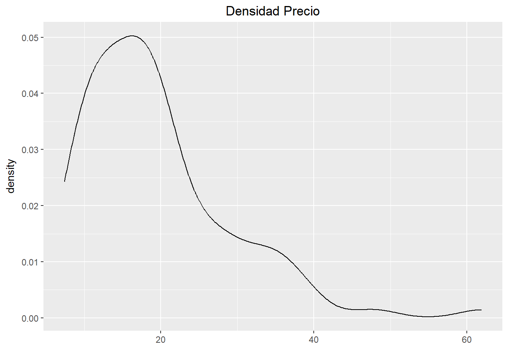
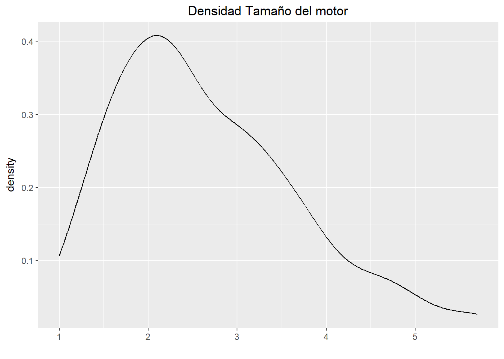
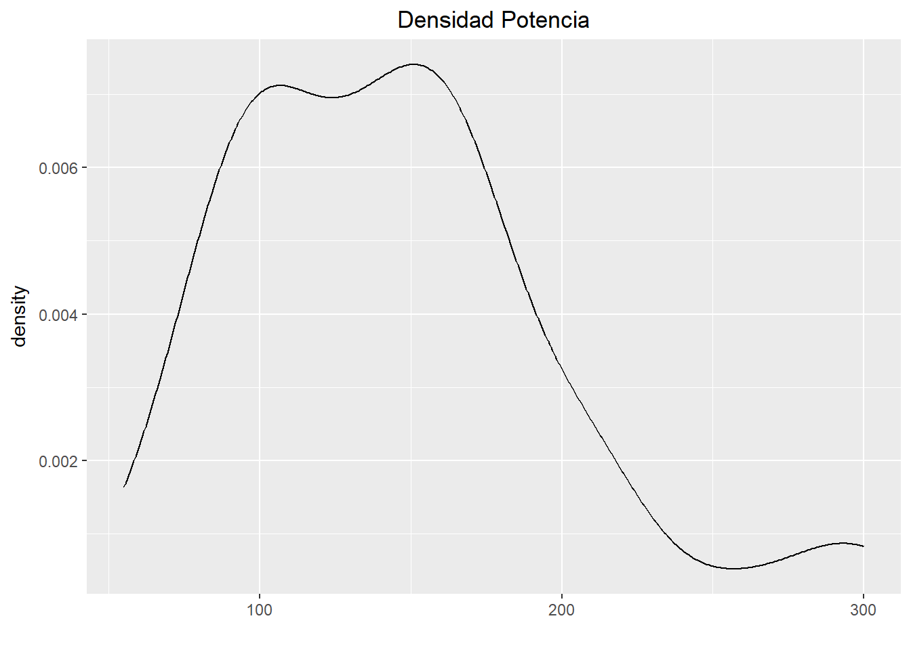

En esta sección de la página web encontraremos un ejemplo sencillo del uso de las densidades de una determinada base de datos, y generaremos algunas graficas usando principalmente el paquete de graficacion GGplot.
Para este ejmplo se utiliza la base de datos Cars93 que es una seleccion aleatoria de automoviles realizada en el año 1993, la base de datos tiene 93 observaciones y 27 variables, nosotros solo utilizaremos las variables Price ,EngineSize y Horsepower.
Como primer paso se debe cargar la base de datos con el uso del paquete MASS y se seleccionan las variabres a estudiar.
require(MASS)
Cars93[c('Price','EngineSize','Horsepower')]Para continuar se debe llamar el paquete de graficacion ggplot2 para generar las graficas de curvas de densidad requeridas, para mayor comodidad cree una función llamada densitygenerador, que es una función basica que solo necesita de dos parametros, una base de datos.
library(ggplot2)
densitygenerador <- function(base,variable){
g1 <- ggplot(base, aes(x = base$variable))
g1 + geom_line(stat = "density") + ggtitle("Densidad") + theme(plot.title = element_text(hjust = 0.5))+xlab("")
}
densitygenerador(Cars93,Price)
densitygenerador(Cars93,EngineSize)
densitygenerador(Cars93,Horsepower)